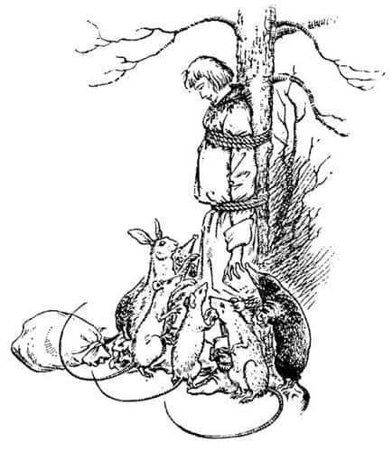
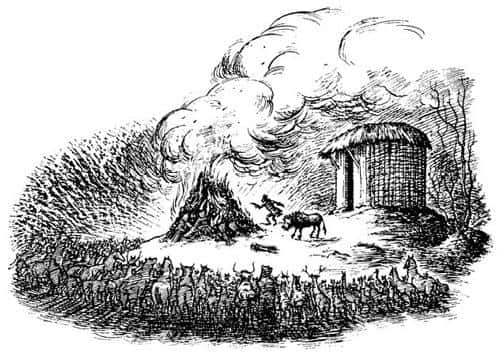

O Gece Neler Oldu?
Kral yediği yumruklar yüzünden o kadar sersemlemişti ki, Calormenliler ellerini çözüp kollarını dümdüz yanına koyarak sırtını bir dişbudak ağacına yaslayana kadar neler olduğunu anlayamamıştı. Ayak bileklerinden, dizlerinden, belinden ve göğsünden ağaca bağlayarak onu orada bırakmışlardı. O anda Kral’ı en fazla rahatsız eden şey - insan için dayanması en zor olan şeyler genellikle küçük şeylerdir - dudağının kanamasına ve kaşınmasına rağmen akan kanı silememesiydi.
Bulunduğu yerden tepenin üzerindeki küçük ahırı ve ahırın önünde oturan maymunu görebiliyordu. Maymunun konuştuğunu ve kalabalıktan arada sırada cevapların yükseldiğini duyabiliyor, ama ne dediklerini anlayamıyordu.
“Acaba Cevher’e ne yaptılar?” diye düşündü.
Az sonra hayvanların oluşturduğu kalabalık dağılmaya başladı. Bazıları Tirian’ın yakınından geçiyordu. Sanki korkuyormuş gibi ona bakıyorlardı, ama hiçbiri konuşmuyordu. Çok geçmeden hepsi gitmiş, ormana sessizlik çökmüştü. Saatler geçti ve Tirian önce susuzluk, sonra açlık hissetmeye, gün ilerleyip akşam yaklaşınca da üşümeye başladı. Sırtı çok ağrıyordu. Güneş battı, alacakaranlık çöktü.
Hava kararmak üzereyken Tirian birtakım ayak sesleri duydu ve kendisine doğru gelen küçük yaratıkları gördü. Solda üç fare, ortada bir tavşan, sağdaysa iki köstebek vardı. Köstebekler sırtlarında küçük torbalar taşıyordu ve torbalar karanlıkta onları çok tuhaf gösteriyordu. Tirian ilk bakışta onların ne tür hayvanlar olduklarını anlamamıştı. Bir süre sonra hepsi arka ayakları üzerine dikildi; soğuk ön ayaklarını Kral’ın dizine koydular ve burunlarını çekerek onun dizini öpmeye başladılar. (Tirian’ın dizlerine ulaşabiliyorlardı, çünkü Narnia’daki konuşan hayvanlar İngiltere’deki dilsiz hayvanlardan daha büyüktür.)
“Lordumuz! Sevgili Kralımız” diyorlardı cılız sesleriyle, “sizin için üzülüyoruz. Ama sizi çözmeye cesaret edemeyiz, çünkü Aslan kızabilir. Akşam yemeğinizi getirdik.”

İlk fare çevik hareketlerle Tirian’ın göğsüne bağlanan iplere kadar tırmanıp oraya oturdu. Yumuşak burnu Tirian’ın yüzünün önünde kıpırdıyordu. Sonra ikinci fare de ilk farenin hemen altına yerleşti. Diğer hayvanlar ise yiyecekleri yukarı göndermeye başladı.
“İçin efendim, o zaman yemek yiyebileceğinizi göreceksiniz” dedi en üstteki fare. Tirian küçük bir tahta bardağın dudaklarına değdiğini fark etti. Bardak bir yumurta kabı büyüklüğündeydi ve bu yüzden içindeki şeyin şarap olduğunu ancak bitmesine yakın anlayabilmişti. Sonra fare, bardağı aşağıya gönderdi, diğerleri doldurup tekrar yukarıya gönderdiler ve Tirian ikinci kez bardağı boşalttı. Bu şekilde Tirian doyana kadar devam ettiler; azar azar içilmesi çok daha iyiydi, çünkü bu şekilde içmek, susuzluğu kocaman bir yudumdan çok daha iyi giderirdi.
“Peynir de var, efendim” dedi ilk fare, “ama pek fazla değil, çünkü sizi çok susatacağından korkuyoruz.” Peynirden sonra onu yulaflı ekmek ve taze tereyağıyla beslediler, sonra biraz daha şarap verdiler.
“Şimdi suyu verin” dedi ilk fare, “Kral’ın yüzünü yıkayacağım. Yüzünde kan var.”
Tirian, minik bir süngeri andıran bir şeyle yüzünün silindiğini hissetti. Yüzünün suyla temizlenmesi onu kendine getirmişti.
“Küçük dostlarım” dedi Tirian, “yaptıklarınız için size nasıl teşekkür edebilirim?”
“Teşekküre gerek yok, teşekküre gerek yok” dedi cılız sesler. “Başka ne yapabiliriz ki? Biz başka kral istemiyoruz. Biz sizin halkınızız. Sadece Maymun ve Calormenliler size karşı olsaydı, onların sizi bağlamasına izin vermeden, paramparça oluncaya kadar kavga ederdik. Ederdik, gerçekten ederdik. Ancak Aslan’a karşı gelemeyiz.”
“Onun gerçekten Aslan olduğunu mu düşünüyorsunuz?” diye sordu Kral.
“Ah, evet, evet” dedi tavşan. “Dün gece ahırdan çıktı. Hepimiz gördük.”
“Neye benziyordu?” dedi Kral.
“Çok korkunç, çok büyük bir aslana” dedi farelerden biri.
“Orman perilerini öldürüp hepinizi Calormen Kralı’na köle yapanın Aslan olduğunu mu düşünüyorsunuz gerçekten?”
“Ah, bu çok kötü değil mi?” dedi ikinci fare. “Tüm bunları görmeden ölseydik daha iyiydi. Fakat onun Aslan olduğundan hiç kuşkumuz yok. Herkes, tüm bu yapılanların Aslan’ın emri olduğunu söylüyor. Hepimiz onu gördük. Aslan’ın böyle olacağını düşünmüyorduk. Hepimiz… hepimiz onun Narnia’ya geri dönmesini istiyorduk.”
“Bu kez çok kızdığı belli oluyor” dedi ilk fare. Korkunç bir hata yapmış olmalıyız. Bizi cezalandırıyor olmalı. Umarım ne için cezalandırıldığımız söylenir bize!”
“Şimdi yaptığımız da yanlış bir şey galiba” dedi tavşan.
“Yanlış olsa bile fark etmez” dedi köstebeklerden biri. “Gerekirse bunu tekrar yaparım.”
Diğerleri, önce, “Şişşşşt” ve “Dikkatli ol” sonra da, “Üzgünüz sevgili Kral, ama artık gitmeliyiz. Burada yakalanmak hiç iyi olmaz” dediler.
“Hemen gidin sevgili hayvanlar” dedi Tirian. “Narnia için olsa bile sizi tehlikeye atmak istemem.”
“İyi geceler, iyi geceler” dedi hayvanlar, burunlarını Tirian’ın dizlerine sürterek. “Tekrar geleceğiz - tabii eğer gelebilirsek.” Sonra hepsi pıtır pıtır uzaklaştı ve orman onlar gelmeden önce olduğundan daha karanlık, daha soğuk ve daha ıssız görünmeye başladı.
Yıldızlar göründü; Narnia’nın son kralı ağaca bağlı bir halde, ağrılar içinde, dimdik ve kaskatı dururken zaman çok yavaş ilerliyordu; ne kadar yavaş olduğunu belki tahmin edebilirsiniz. Ama aniden bir şeyler olmaya başladı.
Uzaklarda kırmızı bir ışık belirdi. Sonra bir an için kayboldu ve daha büyük, daha güçlü olarak tekrar göründü. Tirian karanlık şekillerin ateşin önünde ileri geri hareket ettiğini ve taşıdıkları şeyleri demetler halinde yere attıklarını gördü. Bir süre sonra neler olup bittiğini anladı. Bu yeni yakılmış bir ateşti ve birileri ateşe çalı çırpı demetleri atıyordu. Az sonra alevler iyice yükseldi ve Tirian ateşin, tepenin zirvesinde yandığını fark etti. Ateşin arkasındaki ahır alevlerin ışığıyla kıpkırmızı görünüyordu; Tirian ateşin önünde duran insan ve hayvanların oluşturduğu kalabalığı kolaylıkla seçebiliyordu. Ateşin yanındaki küçük kambur şekil Maymun olmalıydı. Kalabalığa bir şeyler söylüyordu, ama ne söylediği duyulmuyordu. Sonra ahırın kapısı önünde üç kez yere eğildi ve kapıyı açtı. Dört ayaklı ve zorlukla yürüyen bir şey ahırdan çıktı ve yüzü kalabalığa dönük olarak durdu.

Büyük bir uğultu yükseldi, öylesine güçlü bir uğultuydu ki, Tirian bazı kelimeleri duyabiliyordu.
“Aslan! Aslan! Aslan!” diye bağırdı hayvanlar. “Konuş bizimle. Bizi rahatlat. Artık bize kızma.”
Tirian, bulunduğu yerden o şeyin neye benzediğini çıkaramıyordu; sadece sarı ve kıllı bir şey olduğunu görebiliyordu. Görkemli Aslan’ı hiç görmemişti. Sıradan bir aslan dahi görmemişti. Gördüğünün gerçek Aslan olup olmadığından emin değildi. Aslan’ı orada hiçbir şey söylemeden dikilen o kaskatı şey gibi hayal etmemişti. Ama nasıl emin olabilirdi ki? Bir an için aklından korkunç düşünceler geçti. Sonra Aslan ve Taş’ın aynı şey olduğu saçmalığını hatırladı ve her şeyin bir kandırmaca olduğunu anladı.
Maymun, kendisine fısıldanan bir şeyi dinliyormuş gibi başını sarı şeyin başına yaklaştırdı. Sonra dönüp kalabalığa konuştu, kalabalıktan tekrar bir uğultu yükseldi. Sarı şey sendeleyerek geriye döndü ve ahıra doğru yürüdü, ördek gibi badi badi yürüyordu. Maymun arkasından kapıyı kapattı. Ateş söndürülmüş olmalıydı, çünkü ışık aniden kayboldu. Tirian bir kez daha soğuk ve karanlıkta tek başına kaldı.
Eski zamanlarda Narnia’da yaşayıp ölen diğer kralları aklından geçirdi ve hiçbirinin onun kadar şanssız olmadığını düşündü. Genç bir prensken bir cadı tarafından kaçırılıp Kuzeyli Devlerin toprak altındaki karanlık mağaralarında yıllarca saklanan dedesinin dedesinin dedesi olan Kral Rilian’ı düşündü. Sonra her şey tatlıya bağlanmıştı, çünkü Dünyanın Sonu’nun ötesindeki ülkeden esrarengiz iki çocuk gelmiş ve onu kurtarmıştı; böylece Narnia’ya geri dönmüş, uzun süre başarılı bir şekilde hüküm sürmüştü. “Benim durumum öyle değil” dedi Tirian kendi kendine. Sonra daha da geriye gidip Rilian’ın babası Denizci Caspian’ı düşündü. Kötü kalpli amcası Miraz onu öldürmeyi denemiş ve Caspian ormana kaçıp cücelerle birlikte yaşamıştı. Ama bu hikâye de sonunda tatlıya bağlanmıştı; çünkü Caspian’a da dünyanın ötesinden bir yerlerden gelen ve büyük bir kavga verip onu babasının tahtına oturtan çocuklar yardım etmişti; bu kez dört kişiydiler. “Bunlar çok uzun zaman önceydi” dedi Tirian kendi kendine. “Bu tür şeyler artık olmuyor.” Sonra (çocukken tarih derslerinde her zaman başarılı olduğu için) Caspian’a yardım eden o dört çocuğun bin yıldan fazla bir zaman önce Narnia’ya geldiklerini ve olağanüstü bir şey yaptıklarını hatırladı. Bu çocuklar Beyaz Cadı’yı yenmiş ve yüz yıllık kışı sona erdirmişlerdi, daha sonra Cair Paravel’de, görkemli krallar ve güzel kraliçeler olarak hüküm sürmüşlerdi ve onların saltanat sürdüğü dönemler Narnia’nın altın çağları olmuştu. Aslan’ın adı bu hikâyede sıkça geçmişti. Tirian’ın hatırladığı tüm diğer hikâyelerde de geçiyordu. “Aslan ve başka dünyalı çocuklar” diye düşündü Tirian. “Her şeyin kötü gittiği anlarda buraya gelmişler. Ah, keşke yine gelseler.”
“Aslan! Aslan! Aslan! Gel ve bize yardım et” dedi.
Ama karanlık, soğuk ve sessizlik aynen devam ediyordu.
“Bırak da öleyim” diye bağırdı Kral. “Kendim için bir şey istemiyorum. Gel ve Narnia’yı kurtar.”
Gecenin ıssızlığında ve ormanda her şey aynıydı, ama Tirian’ın içinde bir şeyler değişmeye başladı. Nedenini bilmiyordu ama içinde bir umut ışığı belirdi. Bir şekilde kendini daha güçlü hissetmeye başladı. “Ah, Aslan, Aslan” diye fısıldadı. “Eğer gelmeyeceksen en azından dünyanın ötesinden yardımcılar gönder.” Sonra farkında olmadan güçlü bir sesle bağırmaya başladı:
“Çocuklar! Çocuklar! Narnia’nın dostları! Çabuk. Gelin buraya. Başka dünyalardan sizi çağırıyorum, ben Tirian, Narnia Kralı, Cair Paravel’in Efendisi, Issız Adalar’ın İmparatoru!”
Bağırır bağırmaz, yaşamı boyunca gördüklerinden daha canlı bir rüyaya (eğer rüyaysa) daldı.
Yedi kişinin yuvarlak bir masanın etrafında oturduğu aydınlık bir odada ayakta duruyordu. Az önce yemeklerini bitirmişlerdi. İki tanesi çok yaşlıydı; beyaz sakallı ve yaşlı bir adamla bilge, mutlu ve parlak gözlü yaşlı bir kadın. Yaşlı adamın sağ tarafında oturan kişi yetişkin biri değildi, Tirian’dan kesinlikle daha gençti, ama yüzü kralların ve savaşçıların yüzünü andırıyordu. Yaşlı kadının sağında oturan diğer genç için de aynı şeyleri söyleyebilirdiniz. Tirian’ın tam karşısında, masanın diğer yanında her ikisinden de daha genç sarı saçlı bir kız ve onun bir yanında ondan da genç bir erkek, diğer yanındaysa bir kız vardı. Hepsi de Tirian’a çok garip görünen giysiler giymişlerdi.
Bu tür ayrıntıları düşünecek zamanı yoktu, çünkü en genç erkek çocuğu ile kızlar ayağa fırlamış, kızlardan biri çığlık atmıştı. Yaşlı kadın ayağa kalkmayı denemiş ve derin bir nefes almıştı. Yaşlı adam da ani bir hareket yapmış olmalıydı, çünkü sağında duran şarap bardağı masadan düşmüştü. Tirian kırılan bardağın şıngırtısını duyabiliyordu.
Sonra bu insanların kendisini görebildiklerini anladı; ona sanki bir hayalet görmüş gibi bakıyorlardı. Yaşlı adamın sağında oturan ve krala benzeyen kişi (korkudan beti benzi uçmuştu) yumruklarını sıkmak dışında hiç hareket etmemişti. Sonra, “Hayalet ya da rüya değilsen konuş. Bir Narnialı’ya benziyorsun, bizler Narnia’nın yedi dostuyuz” dedi.
Tirian konuşmak ve yardıma ihtiyacı olan Narnia Kralı Tirian olduğunu yüksek sesle bağırmak istedi, ama (bazen rüya görürken benim de başıma geldiği gibi) sesinin çıkmadığını fark etti.
Onunla konuşan kişi ayağa kalktı. “Gölge, ruh ya da her neysen” dedi gözlerini Tirian’a dikerek. “Narnialı’ysan, Aslan adına benimle konuşmanı emrediyorum. Ben Yüce Kral Peter’im.”
Oda Tirian’ın gözleri önünde dalgalanmaya başladı. Her an belirsizleşen ve hep bir ağızdan konuşan yedi kişinin seslerini duyuyordu ve “Bak! Belirsizleşiyor” “Eriyor” “Kayboluyor” gibi şeyler söylüyorlardı. Biraz sonra ağaca bağlı olduğu yerde, soğuktan kaskatı bir halde uyandı. Gündoğumu öncesinin kasvetli ve donuk ışığı tüm ormanı sarmıştı, her yer çiy nedeniyle sırılsıklam olmuştu; sabah olmak üzereydi.
Hayatı boyunca uykusundan hiç bu kadar kötü uyanmamıştı.